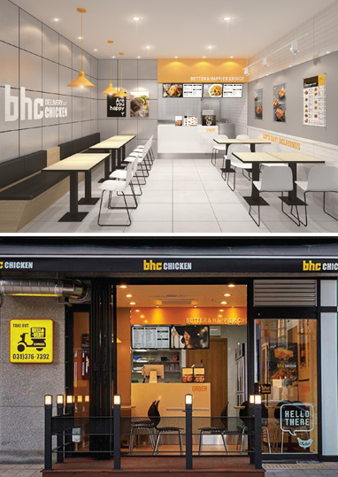
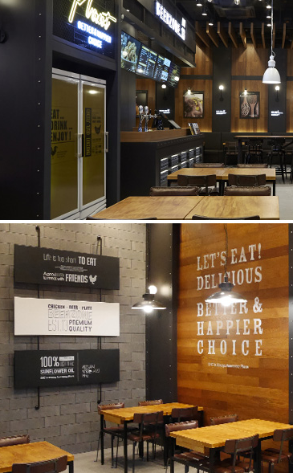

BI의 의미
bhc의 bi는 배달중심 브랜드인 레귤러 타입 매장과 내점과 배달영업을
함께 할 수 있는 비어존 타입 매장으로 나뉘어집니다.
레귤러 타입과 비어존 타입 모두 bhc의 통합된 로고를 활용하여
브랜드 이미지를 강화하였습니다.


새로운 배달중심 레귤러 매장의 bi 는 노란색을
메인 컬러로 사용하여
'희망과 행복 즐거움' 을 내포하고 있습니다.
비어존 매장의 경우 내점과 배달영업을 함께 할 수 있고
Chicken, Beer, Plate 의 메뉴 컨셉으로 탄생된 브랜드입니다.
독특한 인테리아가 시선을 사로잡는 bhc 비어존 매장은 빈티지 모던
인더스트리얼을 주제로 프리미엄 공간의 특성을 살린 브랜드입니다.